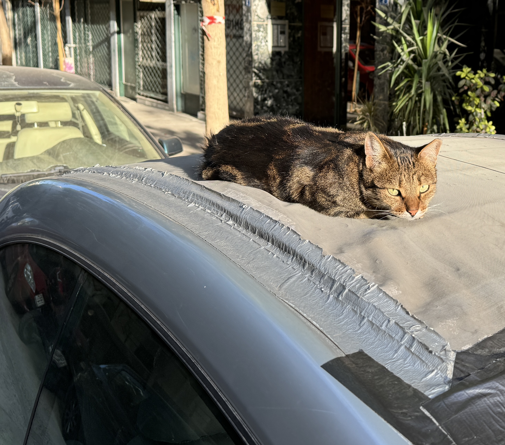
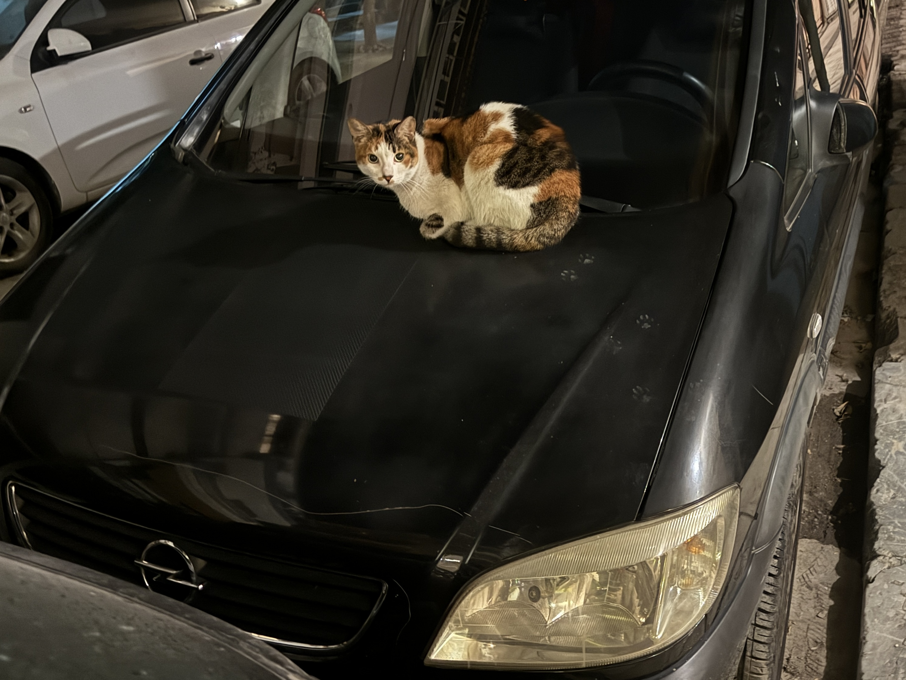

Section 01
Opening paragraph. Establish place, material conditions, or the basic situation. Keep it controlled.
Section 02
Add tension or contradiction. The image should not merely illustrate the text; it should complicate it.
Section 03
Shift the register. Introduce a different scale, angle, or emotional pressure so the page does not flatten out.
Section 04
Move toward compression. The final image should feel like a culmination, not another interchangeable beat.




Replace this with the first image caption.